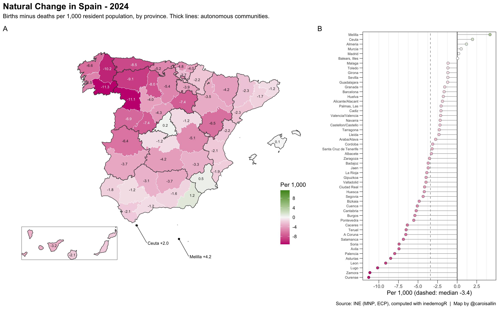
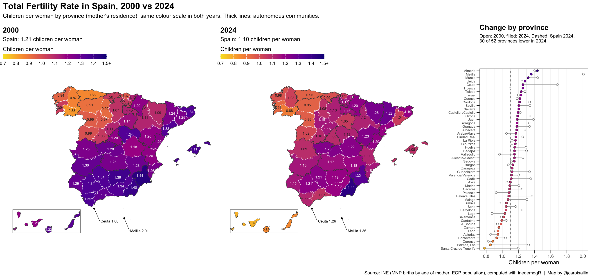
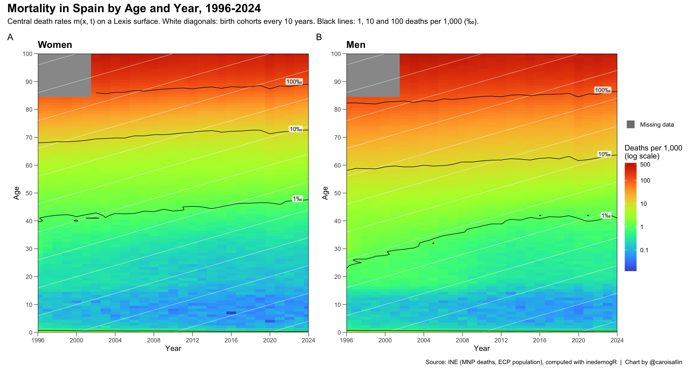
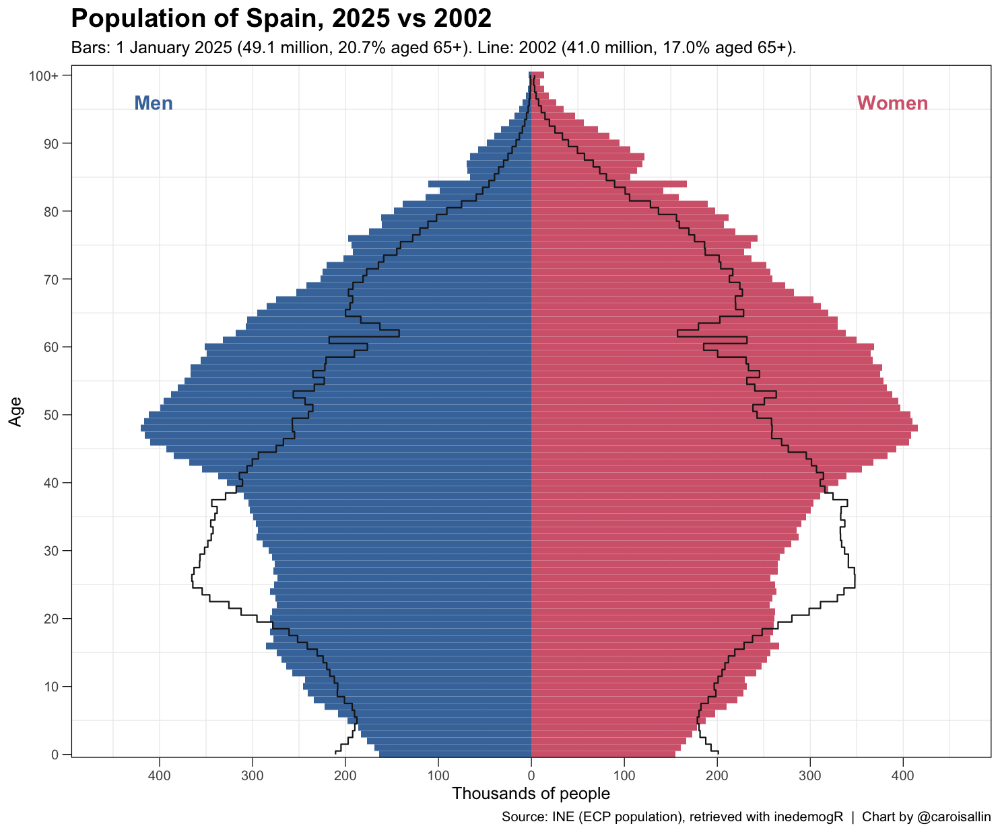
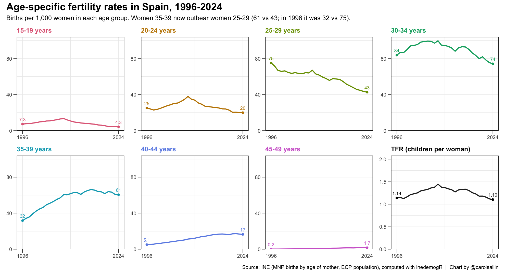

Figures built end to end with inedemogR from live INE
data: every number below comes from the package’s retrieval and
indicator functions. Styling is added on top with ggplot2,
sf and patchwork. The Gallery code article walks through the
inedemogR part of each figure.
Births minus deaths per 1,000 residents. Functions:
get_ine_births(), get_ine_deaths(),
get_ine_population(), crude_birth_rate(),
crude_death_rate(),
rate_of_natural_increase(), get_ine_geo().

Children per woman by mother’s province of residence, on one colour
scale for both years. Spain fell from 1.21 to 1.10, while several
north-western provinces, the lowest in 2000, rose. Functions:
get_ine_births_by_age(), get_ine_population(),
age_specific_fertility_rate(),
total_fertility_rate(), get_ine_geo().

Central death rates by age and year for women and men, with
birth-cohort diagonals and iso-mortality contours. Grey: ages 85+ before
2002, when INE published population only as an open 85+ group.
Functions: get_ine_deaths(),
get_ine_population(), compute_exposure(),
compute_death_rates(),
plot_lexis_diagram().

Population on 1 January 2025 by single year of age and sex, with 2002
drawn on top as an outline. The 1940s post-war cohorts and the baby boom
of the 1960s and 1970s have moved up 23 years; the cohorts born since
2008 are smaller. Functions: get_ine_population(),
plot_population_pyramid().

Births per 1,000 women in each five-year age group, with the total
fertility rate in the last panel. Rates below age 30 fell, rates above
35 rose: women aged 35-39 now have more children than women aged 25-29.
Functions: get_ine_births_by_age(),
get_ine_population(),
age_specific_fertility_rate(),
total_fertility_rate().
